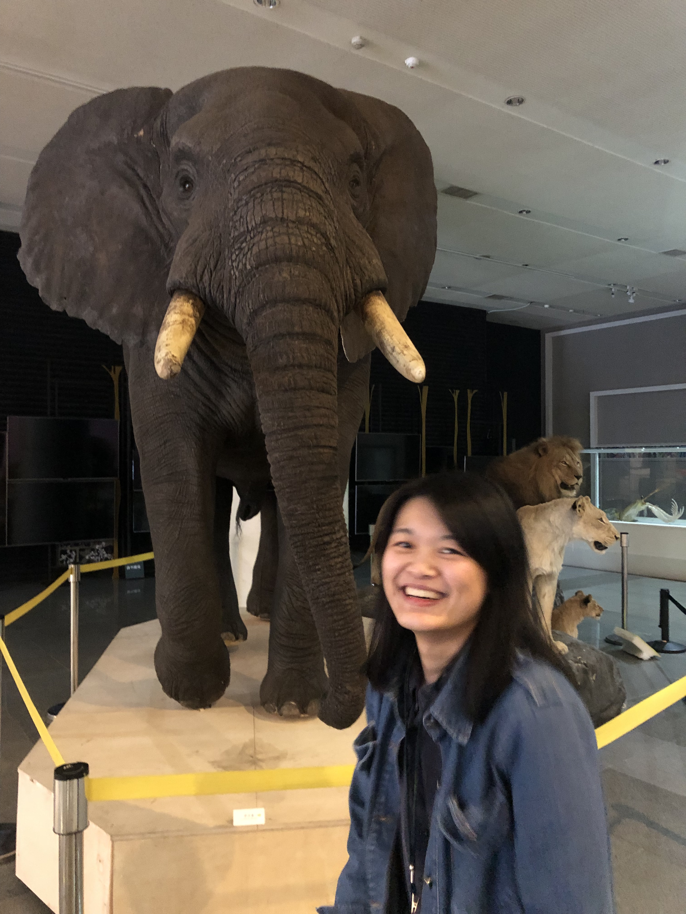

About Me
Hello! I am a palaeobiologist passionate about fossils, biodiversity, and scientific communication. I specialize in 3D visualization of fossil specimens using micro CT data and am currently completing my Erasmus Mundus master's program.